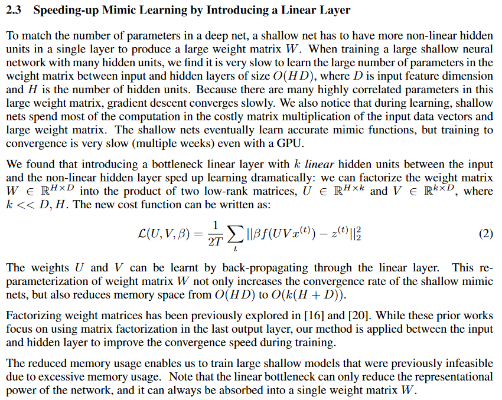

This is a summary of a few papers I read in the past week which I believe are relevant for shaping my research directions. I summarized some important points from each article. For my own future reference, I rated each paper on four scales: relevance, insight, clarity and elegance. Elegance refers to the simplicity of the suggested approach relative to its potential gain. These papers cover a wide range of approaches. Further reading on each approach, and additional approaches, not covered by these papers, is still needed. All papers are freely accessible, see link below each title.
https://arxiv.org/pdf/1711.09784.pdf
Relevance 3 Insight 4 Clarity 4 Elegance 3
Distilling a Neural Network Into a Soft DecisionTree. Nicholas Frosst, Geoffrey Hinton, Google Brain Team.
Several mini-MLPs, with a single-neuron output each, are trained simulatenously. Training examples are channeled according to the decision rule at the current node (< 0: right branch, otherwise: right branch). A method to train the tree is presented. problems resulting from the low number of examples shown to each node at the deep layers are discussed. Regularization is required to ensure the split at each node is roughly equal between the two branches. Benefits:
The main draw for me is in the elegant fusion between two established classification approaches, the decision tree and the MLP. While not necessarily viable as a "production tool", the approach may be very interesting to try in the context of exploratory data analysis for high dimensional, high volume data.
MobileNets: Efficient Convolutional Neural Networks for Mobile Vision Applications
Andrew G. Howard, Menglong Zhu, Bo Chen, Dmitry Kalenichenko, Weijun Wang, Tobias Weyand, Marco Andreetto, Hartwig Adam
17 April 2017
https://arxiv.org/pdf/1704.04861.pdf
Relevance 2 Insight ? Clarity 2 Elegance ?
This paper proposes a class of network architectures that allows a model developer to specifically choose a small network that matches the resource restrictions (latency, size) for their application. MobileNets primarily focus on optimizing for latency but also yield small networks. Many papers on small networks focus only on size but do not consider speed.
The basis of the approach is matrix factorization, an approach studied in more detail and with more insight in other works (see below).
The "Prior work" section is comprehensive and describes the following approaches. Numbers in brackets are the citation number within the article:
hard to read without understanding the following terms:
https://arxiv.org/pdf/1504.04788.pdf
Wenlin Chen
James T. Wilson
Stephen Tyree
Kilian Q. Weinberger
Yixin Chen
19 Apr 2015
(This is ref. 2 in Mobilenets article)
Code: http://www.weinbergerweb.com
Relevance 4 Insight 3 Clarity 5 Elegance 5
As deep nets are increasingly used in applications suited for mobile devices, a fundamental dilemma becomes apparent: the trend in deep learning is to grow models to absorb ever-increasing data set sizes; however mobile devices are designed with very little memory and cannot store such large models. We present a novel network architecture, HashedNets, that exploits inherent redundancy in neural networks to achieve drastic reductions in model sizes. Hashed Nets uses a low-cost hash function to randomly group connection weights into hash buckets, and all connections within the same hash bucket share a single parameter value. These parameters are tuned to adjust to the Hashed Nets weight sharing architecture with standard backprop during training. Our hashing procedure introduces no additional memory overhead, and we demonstrate on several benchmark data sets that Hashed Nets shrink the storage requirements of neural networks substantially while mostly preserving generalization performance.
Ba & Caruana (2014) [see #5 below] show that deep neural networks can be successfully compressed into “shallow” single-layer neural networks by training the small network on the (log-) outputs of the fully trained deep network (Bucilu et al., 2006)
In this article, the authors discuss a heruistic memory-reduction technique. The concepts are developed with ordinary, fully-connected MLPs in mind, but it is mentioned they can be applied to many other ANN architectures (including recurrent networks), and also combined with memory reduction techniques proposed by other authors (some of which are cited and briefly explained).
The parameters of the weight matrix between two consecutive hidden layers of sizes and , are replaced with a vector of parameters, where can be decided by the user based on the desired memory-performance tradeoff. The linear part of the traditional feed-forward calculation, , is replaced by:
Where is the vector of weights (length ) and
is a mapping
The "hashing trick" refers to the fact that , rather than being tabulated in memory, is an instance from a suitable family of hashing functions and therfore takes up memory. A different hashing function is assigned to each layer.
The modifications required in the SGD training procedure are detailed.
Each of the weights of the original transfer matrix can be factored out in the mult-sum expression, as the same value is used in several connections.
is populated by distinct values. A location shares the parameter value with the other locations mapped to the same hash bin.
This is equivalent to an ordinary MLP where an extra linear layer of dimension was added between the two layers of the original MLP. The weights in the two extra transfer matrices (before and after the new layer) are all 0's and 1's, and are predetermined (i.e. not learnable). This representation may be useful when comparing performance with ordinary MLP architectures, and possibly opens the door for analogies with LSTM architectures with its learnable gates.
An optional extension discussed by the authors is to use as the possible values, this is supposedly to avoid "bias in the weights". This is achived by multiplication by an additional hash function
In the "experimental results" sections, the authors compare several memory reduction techniques tested on MNIST hand-written digit image classification task. HashNet shows equivalent performance to other methods up to 1:8 compression ratio (CR), and superior performance from 1:16 to 1:64 CRs. In some settings, however, it is only slightly better than straightforward "compression" by training ordinary NNs with shrinked layer sizes. Low-Rank Factorization, a competing and somewhat easier-to-implement compression approach, has competitive performance up to 1:8 CR, but performs poorly at higher CRs. Low-Rank Factorization is discussed in #4 below.
https://arxiv.org/pdf/1306.0543.pdf
Misha Denil, Babak Shakibi, Laurent Dinh, Marc’Aurelio Ranzato, Nando de Freitas,
27 Oct 2014
Relevance 5 Insight 5 Clarity 3.5 Elegance 3
We demonstrate that there is significant redundancy in the parameterization of several deep learning models. Given only a few weight values for each feature it is possible to accurately predict the remaining values. Moreover, we show that not only can the parameter values be predicted, but many of them need not be learned at all. We train several different architectures by learning only a small number of weights and predicting the rest. In the best case we are able to predict more than 95% of the weights of a network without any drop in accuracy.
This is referenced in #3 above
Code available on github: https://github.com/mdenil/parameter_prediction
Lei Jimmy Ba
Rich Caruana
NIPS 2014
https://papers.nips.cc/paper/5484-do-deep-nets-really-need-to-be-deep.pdf
Relevance 5 Insight 5 Clarity 4 Elegance ?
The authors perform a "shallowing" of existing neural networks and report that learning a smooth function (i.e. the soft outputs of a trained ANN) is faster than learning the "hard" classifications with the same shallow architecture.
They also point that a matrix between a layer of size and a layer of size does not need to have parameters. The number of parameters can be reduced, and controlled using a parameter by writing it as
where

Binarized Neural Networks: Training Neural Networks with Weights and Activations Constrained to +1 or −1
Matthieu Courbariaux
Itay Hubara
Daniel Soudry
Ran El-Yaniv
Yoshua Bengio
17 Mar 2016
Relevance 5 Insight 5 Clarity 4 Elegance 2.5
https://arxiv.org/pdf/1602.02830.pdf
The work described in this paper combines algorithmic innovation, low-level (GPU instruction) coding, and task-specific deep learning network design, to demonstarte that BNNs (Binarized deep Neural Networks) can perform similarly to ordinary floating-point networks, with significant savings in energy consumption (memory savings are also substantial, but are secondary from the authros' point of view). The scope of the research presented suggests a team efforts of several months.
Presenting a novel training algorithm which improves on previous works in binarization:
Demonstrating how BNNs can be implemented on NVIDIA GPUs efficiently:
Demonstrating that BNN's achieve "near state-of-the-art" results on MNIST and CIFAR image-classification datasets. The task-specific network design is detailed, several advanced techniques were combined to reach competitive performance.
The authors report a speedup factor of 7 of their SWAR-optimized kernel over naive kernel implementation.
The concept of a binary networks is intuitively appealing. This work demonstrates that careful design and training of binary networks can achieve state-of-the-art results, giving hope that additional network architectures can be binarized, with significant gains in computational resource efficiency and run times.
In order to comprehend the apparent success of the approach in saving NN computations, I offer the following intuitive explanations. They expalin how the workings of a binarized network compare with a traditional network, with regards to the 3 main notions of a neural network - the state representation vector, the linear transformation matrix, and the nonlinearity. For developing this intuition I was assisted by this recorded talk by Daniel Soudry.
To summarize, the binary network performs similar logic to a traditional network, except it limits itself to a very concise (prehaps the most concise) representation for each element. This supports the case for make existing neural networks "leaner" by removing the less significant parts of their representation, while maintaining a very good handle on their performance.
The authors further report they were able to reach comparable performance to a reference (traditional) MLP without increasing the number of neurons per layer, relative to the reference MLP. In the talk, it is further detailed that in some cases, in order to reach similar results, the network was expanded, however the binary network remained substatially more efficient that the full-percision network even after expansion (which was by a maximum factor of 3).
These are points that I feel were not sufficiently discussed and may represent potential gaps in the methodology: